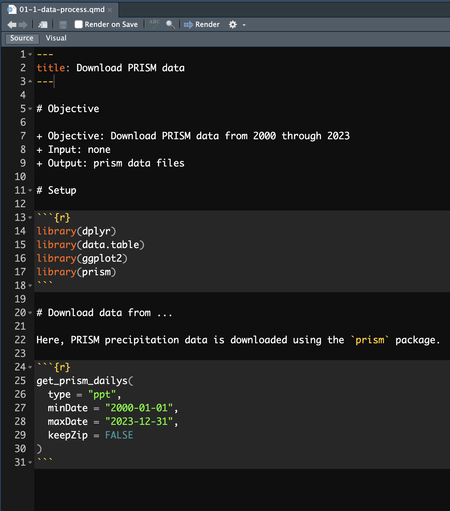

06-1: How to write R codes, manage Projects, work with RStudio
Files
It is much easier to make comments in a qmd file than an R file
You can better organize your codes with markdown section headers (e.g., #, ##)
R crashed at a certain chunk and had to restart R and then run all the R codes up to the problematic chunk? Use
Run All Chunks Abovebutton (click on the triangle right to theRunbutton and select the option, or hitoption+command+P).Easily move between sections and subsection using the navigator at the bottom lower corner of the source pane


You can write R codes however you would like. But, your code may get more readable to you and others who might read your codes by following a style guideline that is accepted by many R users. There are several popular styles of formatting R codes:
Examples
Here are some examples of the tidyverse style:
The styler package can help you follow partially the tidyverse coding style.
Once the package is installed, you can highlight the lines of codes and hit cmd + shift + A for Mac (ctrl + shift + A for Windows) to reformat the codes to conform with the tidyverse style.
Alternatively, you can click on Addins in the middle of the menu at the top, and select style selection.